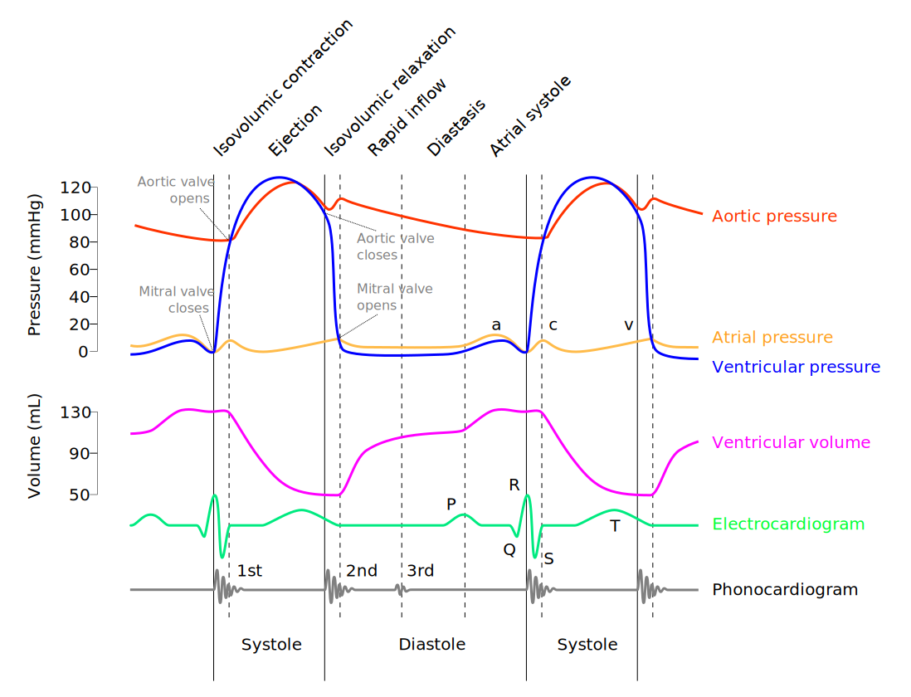
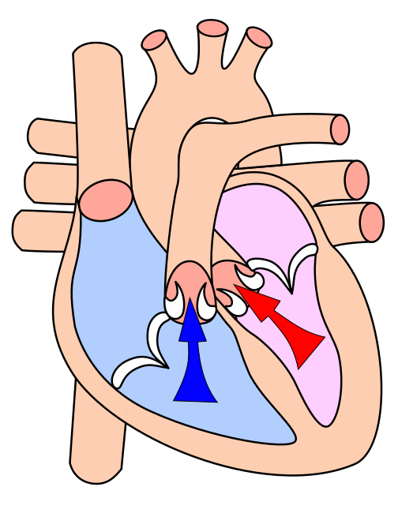
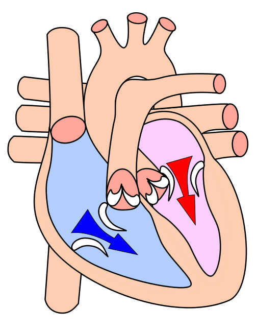
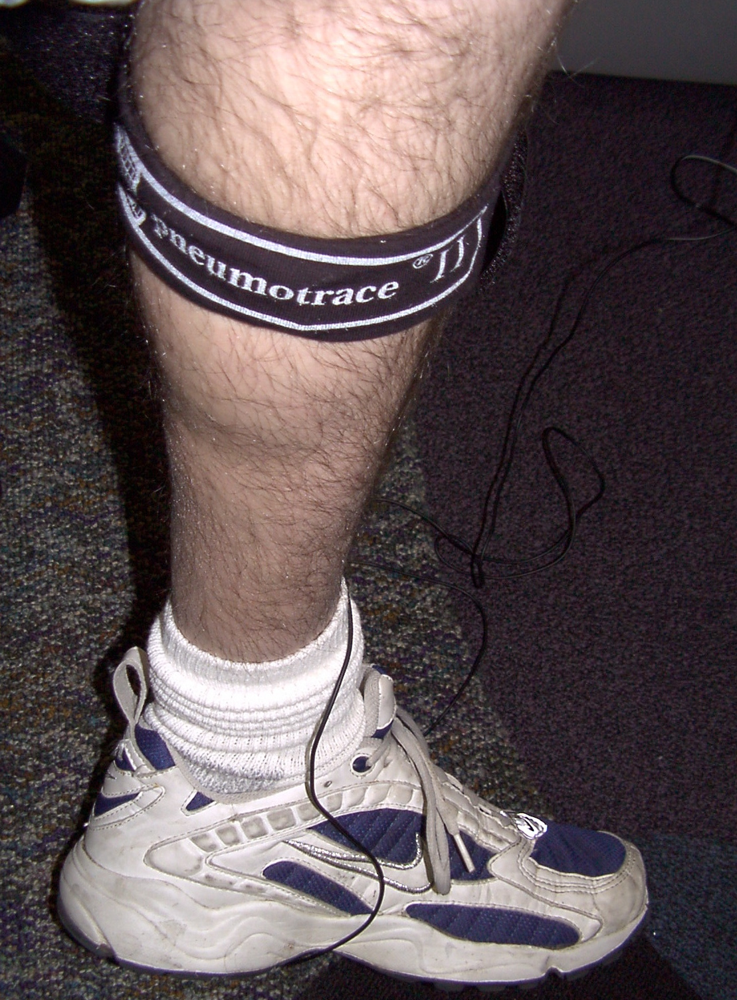
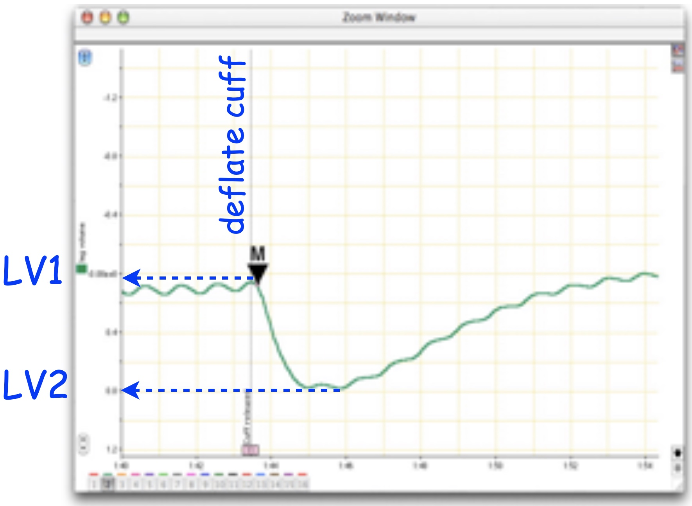

{kind=link}
{kind=link}

Lab 3: Peripheral Circulation and The Dive Response
week 3
labs
circulation
peripheral circulation
blood pressure
dive response
Peripheral circulation goes to tissues throughout your body and to the extremeties. One of the most interesting adjustments to peripheral circulation is the dive response.
Before Lab
Prepare for lab by:
- Watch Peripheral Circulation Podcast.
- Read [Protocol 2] on measuring blood pressure.
- Read the lab manual below.
- Write the [Prelab] in your lab notebook.
- Do Quiz on Laulima (open 24 hrs before lab).
Exercises
- Measuring blood pressure
- Peripheral circulation experiment
- Develop a simple experiment to demonstrate a principle of peripheral circulation of choice.
- Dive response experiment
- Develop a hypothesis for a potential trigger for the dive response.
Background: Blood pressure and peripheral circulation
Vertebrates have a closed circulatory system where the blood is always enclosed within blood vessels or the heart. Blood is pumped from the heart (the central pump) to the vasculature: the arteries, capillary beds (sites of delivery to tissues), the veins, and back to heart. There are several important consequences of this design: (1) blood pressure varies across species according to oxygen demand and morphology (especially animal height), (2) blood pressure varies along the circuit, (3) blood pressure can be regulated at points along the circuit, and (4) blood pressure can be modified situationally depending the state of the animal.
Blood pressure varies across species
For very active animals (e.g., mammals and birds) or very large animals (especially very tall animals that have more gravity to resist), the ability to regulate blood pressure is critical — active animals will need more oxygen delivered at a faster rate, especially to the most metabolically active tissues, and larger animals will require much more pressure to reach all of their tissues.
Blood pressure varies during the cardiac cycle.
The cardiac cycle is a complete cycle of the heart beat, comprised of systole (Figure 1; the phase involving contraction and ejection) and diastole (Figure 2; relaxation and filling) of the atria and ventricles. We will learn more about the cardiac cycle in the EKG lab. In this lab we are focusing on the blood pressure changes. The largest muscles of the heart are in the ventricles. Blood pressure is at its highest immediately after the ventricles contract to push blood into the arterial system (Figure 3; systolic pressure) and declines as the ventricles relax to fill with blood before pumping again. Just before the ventricles contract, blood pressure is at its lowest (diastolic pressure).


{kind=link}
Blood pressure varies along the vascular circuit.
Blood in the arteries leaving the heart is always at very high pressure as compared to the low pressure in the veins in the legs or the even lower pressure in capillary beds at the tissues. Blood pressure drops as the blood vessels branch again and again, increasing the cross-sectional area of the circuit, until it reaches the capillaries where the tissues experience relatively constant, low pressure to facilitate diffusion.
The slow blood flow at the capillaries facilitates diffusion of oxygen, nutrients, and carbon dioxide and other wastes between the blood and the tissues that are bathed by the capillaries. Therefore, pressure varies depending on distance from the heart, the cross-sectional area of the blood vessels, as well as gravity. However, at any given point along the circuit, blood pressure remains fairly constant.
Circulation can be adjusted situationally.
At most times, blood pressure is regulated to maintain a relatively constant pressure, however, there are times when circulation needs to be adjusted. A well-known example is the Fight-or-Flight response, which occurs, for example, when an animal sees a predator or anticipates a fight. The sympathetic nervous system dominates and causes a ramp-up of circulation to deliver more energy to the skeletal muscles: increased cardiac output (= heart rate x stroke volume) and blood pressure, and increased blood flow to the lungs and skeletal muscles. In contrast, the rest-and-digest response occurs after an animal has had a large meal. The parasympathetic nervous system dominates, lowering heart rate, concentrates blood flow to the gut, and promotes a resting state.
Adjustments to blood flow are not simply an adjustment of heart function, but also constriction or relaxation of the vasculature (blood vessels: arteries, veins, capillaries). Constricting blood vessels will reduce their cross-sectional area and increase blood pressure and flow.
Local changes in circulation are under nervous and hormonal control. Regulation of blood flow in the vertebrate circulatory system occurs by three primary mechanisms: 1) local receptors (nervous system) to detect levels of metabolic activity (e.g., carbon dioxide receptors), 2) sympathetic and parasympathetic (autonomic nervous system) control of the vasculature including capillary beds at the tissues, and 3) endocrine (hormonal) control of the vasculature.
In this lab, we will measure blood pressure of volunteers using a finger pulse transducer, a stethoscope, a blood pressure cuff (sphygnomanometer), and changes in peripheral circulation by measuring the volume of the extremities using a belt with a force transducer. We will do a series of learning exercises and then conduct an experiment on factors affecting peripheral circulation and as well as during simulated dives (the dive response).
Equipment
- PowerLab data acquisition system
- Finger pulse transducer
- Stethoscope
- Blood pressure cuff
- Blood pressure gauge (sphygnomanometer) with pod or BNC port
- Respiratory belt transducer
- LabChart software, note Blood Pressure settings
Exercise 1: Measuring Blood Pressure
Traditionally, systemic arterial blood pressure is measured using a stethoscope and a blood pressure cuff connected to a blood pressure gauge called a sphygnomanometer (sss-fig-no-ma-nom-eter). The sphygnomanometer is calibrated in pressure units of mmHg (millimeters of mercury). Modern instruments use compressed air as a hydraulic fluid to transmit the force of your pulsing blood.
Refer to [Protocol 2.1 and 2.2] for how to measure blood pressure.
Setup
- Use “Blood Pressure” settings to start Chart software.
- Setup Finger Pulse transducer on Input 1.
- Attach sphygmomanometer transducer to Input 2 (pod input).
Data Collection
- Measure blood pressure on a human volunteer using auscultation (listening through a stethoscope) and a sphygnamonometer .
- Measure blood pressure using the PowerLab system and LabChart. Check that the channel settings are correctly set for each channel.
- Repeat (1) and (2) on each group member, making sure to comment your data trace.
Questions for thought…
- Does the time of the first Korotkoff sound (systolic pressure heard through the stethoscope), correspond with the first appearance of blood flow (as measured by the finger pulse)? Why or why not?
- Would slowing the rate of pressure release from the cuff make your readings of the first appearance of blood flow more accurate? What problems might be caused by slowing pressure release?
- Does the time that diastolic pressure is heard through the stethoscope correspond with anything particular in the blood flow signal? Can you, therefore, use pulse measurement to replace the stethoscope?
- How much variation in measurement of diastolic and systolic pressures was observed within and between individuals? What are potential sources of variation in these estimates?
Exercise 2: Exploring Peripheral Circulation
Objectives
To demonstrate basic principles of peripheral circulation using blood pressure data from the extremities. What you would expect based on relative distance from the heart and gravity (and whether the location is above or below the heart)?
Procedure
- Brainstorm with your lab group to develop some simple experiments to demonstrate principles of peripheral circulation. What are some good hypotheses for peripheral blood pressure?
- What are some good locations to measure (or other simple manipulations) for comparison? Make sure you place the stethoscope on a major artery or vein such as the radial artery on the forearm, or the small saphenous vein on the calf. Ask for help if you don’t know where they are. Be specific when you write up your methods or we will not understand what you did.
- For each experiment, determine both systolic and diastolic blood pressure.
Notes
- You may need to recalibrate the blood pressure force transducer after each time you move the cuff.
- Place the instruments directly on the skin (not through clothes).
- When measuring from foot, please wash toe before attaching pulse transducer to prevent any fungal contamination.
- Always Release the cuff pressure completely as soon as you are done taking data
Analysis
Compare systolic and diastolic pressure for each of your treatments versus an appropriate control. Think carefully about appropriate controls for your ideas to achieve the best test of your hypotheses.
Questions for thought…
- How much does blood pressure change for each treatment? What could explain it? Does it seam reasonable?
- How much variation is there among members of your group? What are sources of variation in these estimates?
Exercise 3: The Dive Response
When an air-breathing animal dives, it voluntarily holds its breath while the tissues continue to use oxygen. The dive response is a reflexive response that reorganizes circulation to maintain blood flow to the most essential organs – the brain, eyes, and myocardium (heart muscle), while reducing blood flow to the peripheral tissues including musculature of the limbs and thorax, lungs, and renal system. Remarkably, all vertebrates have a dive response. The responses vary greatly between taxa, with some of the most pronounced being in whales and diving seals.
Primary features of the human dive response are the rapid onset of bradycardia (slowing of the heart rate), which works together with peripheral vasoconstriction to shunt blood toward the bodyʻs core. This causes an increase in the volume of blood returning to the heart and an increase in stroke volume. These in turn cause an increase in arterial blood pressure. To counteract this increase in blood pressure and reduce overall blood flow, there is a drop in heart rate.
As a whole, the dive response preserves circulation around the vital organs while reducing circulation to the peripheral tissues. Oxygen becomes depleted and carbon dioxide and lactate build up in the tissues during a dive. When the animal resurfaces, there is a recovery period characterized by more rapid heart rate and ventilation to absorb more oxygen and flush out lactate and carbon dioxide.
The dive response is triggered by sudden submergence of the face in cold water, which stimulates the trigeminal nerve receptors around the nose. Stimulation is enhanced with colder temperature, which inhibits the cardiovascular center, as well as increasing parasympathetic output and reducing sympathetic output, both of which reduce heart rate.
Objectives
You will investigate the effects of the diving response on heart rate and peripheral circulation in humans during simulated dives. First, you will examine the effect of holding your breath, then you will examine the effects of simulated dives, and an experiment to determine which stimuli contribute to triggering the dive response. One person will serve as the experimental subject.
Additional Required Equipment
- Respiratory Belt Transducer
- Wash basin, Ice, Thermometer
- Duct tape
- Use the Dive settings file
A. Set up and testing

- Switch the PowerLab to the Dive Response settings. You should have the Finger Pulse transducer in channel 1 and the Respiratory Belt Transducer to input 2 to measure leg volume. Check the channel settings to make sure they match the inputs. Ask your TA for the proper settings. In this experiment, the sphygnamanometer is used to pressurize the thigh and not plugged in to PowerLab.
- Set up and maintain a wash basin with icewater deep enough to submerge your face up to your temples. Use a thermometer to monitor temperature at 10-15C (50-60F), replenish with ice as needed.
- Attach the respiratory belt snugly to the calf (Figure 4). It should feel tight and the sensor fabric should be slightly stretched.
- Place the sphygnomanometer cuff around the subject’s thigh, and duct tape it securely so that it can be pressurized to restrict blood flow. Be sure to apply tape to secure both the top and the bottom of the cuff.
- Record for 10 seconds and stop. Scale the Pulse channel and the Leg Volume channel to fully display the data.
- Record again and test by flexing and relaxing your calf. You should be able to see a clear deflection on the leg volume channel. If it is very small, try tightening the respiratory belt a little. Check with your TA before moving on.
- For all experiments, resting position for the subject is leaning over the basin with the face just aboe water.
- Use a timer to time the treatments (a cell phone or a web browser will do).
The idea behind measuring peripheral circulation using leg volume changes
We can quantify the volume in your peripheral circulation (specifically your lower leg) by assessing venous pooling for a standard time interval. By constricting blood flow to the lower limb, we will prevent venous return of the blood. Because the veins have little smooth muscle, it is relatively easy to stop venous return.
Protocol: Basic Leg volume measurement
You will use the sphygnomanometer cuff to cut off circulation in the leg for 20 sec. at the upper thigh. The respiratory belt transducer senses stretch and can be used to measure calf volume (Figure 4) before, during inflation, and after deflating the cuff (recovery).
- Record the subject’s resting recording for 10 seconds.
- Rapidly Inflate the cuff to 60 mmHg (or whatever pressure feels tight enough to restrict blood flow for the subject [I used 80 mmHg], the pressure should be same for all measurements),
- Hold pressure for exactly 20 seconds (NOTE: You may have to gently squeeze the bulb to keep pressure constant.)
- Quickly and COMPLETELY release the pressure (Figure 5).
- Recovery: Record for 30 sec or until the leg volume returns to baseline.
NOTES:
- Comments should be placed at the start of rest and at the start of each change in condition.
- Be sure to have the comments pre-typed in the comment box and hit enter at the start of each event to accurately place comments in time.
- Inflate and deflate the cuff as fast as possible.
- When doing repeated measurements, ensure you have baseline data for at least 15 sec before inflating the cuff again.
- The subject will have to hold their breath for about 30 sec.
- Make good comments and minimize movement in the Finger Pulse Transducer.
B. Control experiment
- Use the Section A setup with the respiratory belt on the calf (Figure 4) and the sphygnomanometer cuff on the upper thigh.
- Subject leans over basin with face just above water.
- Start recording and comment “control, resting”, record for 10sec.
- Rapidly inflate the cuff to 60mmHg, comment “control, cuff inflated”, and record for 20sec.
- Quickly release all cuff pressure, and comment “deflated”. Record for 30 sec or until leg volume and HR stabilizes.
Make sure to comment at each step and always DEFLATE CUFF COMPLETELY each time.
C. Dive response experiment
Note: It is critical that the temples be submerged in order to see the dive response.
NOTES:
- Make sure everything is very clear before beginning to avoid repeating this experiment.
- It is a good idea to practice a dry run of the simulated dive procedure (without submerging face).
- One member of the group should tap the subject on the back at 10-second intervals while immersed to help them keep track of the time and prevent anxiety.
- Work out in advance what your signals will be for timing (10s mark) vs. resurfacing.
- Do not force the subject to remain submerged.
- Use the Section A setup. The basin should be in front of the subject and at 10-15C.
- Before beginning, allow the subject to find a comforable chair height and leg posture to allow them to remain as motionless as possible with their face above the basin. Most people sit, but standing is OK if preferred.
- Rest: Start recording and comment “dive experiment, resting”, record for 10sec.
- Simulated dive:
- Rapidly inflate cuff to 60mmHg, comment “cuff inflated”.
- Have the subject take a deep breath, exhale partially, and then hold their breath while immersing their face up to their temples in the pan of water. Comment “dive”, record for 20 sec.
- Rapidly release all cuff pressure. Comment “deflated”, and record for 10 sec.
- Signal to the subject to resurface and breathe normally with face just above water. Comment “normal breathing” and record for 10 sec.
- Allow subject to gently dry face.
- Rapidly inflate cuff to 60mmHg, comment “cuff inflated”.
- Post-dive: Perform a leg volume measurement post-dive.
- Comment “post-dive” and record for 10 sec.
- Rapidly inflate cuff to 60mmHg, comment “cuff inflated” and record for 20 sec.
- Rapidly release all pressure. Comment “deflated”, and record for 10 sec.
C. Breath holding exeriment
- This experiment is very similar to the dive response, but without facial immersion. The subject will remain motionless with their face above the basin.
- Record and comment “breath hold experiment, resting”. Record for 10 sec.
- Breath hold:
- Rapidly inflate cuff to 60mmHg, comment “cuff inflated”.
- Have the subject take a deep breath, exhale partially, and then hold their breath. Comment “breath hold”, record for 20 sec.
- Rapidly release all pressure. Comment “deflated”, and record for 10 sec.
- Signal to the subject to breathe normally with face just above water. Comment “normal breathing” and record for 10 sec.
- Rapidly inflate cuff to 60mmHg, comment “cuff inflated”.
D. Additional Experiment
The simulated dive involves multiple stimuli simultaneously. Brainstorm how you might identify the components which are actually “triggering” the dive response by isolating stimuli. Are these components all necessary? Are they additive?
Each group should design and perform an experiment to isolate one potential stimulus responsible for triggering the dive response. Get your idea approved by your TA. Share your results with the other groups. Make sure you explain your methods carefully (including your logic) in your lab report.
Analysis
Change in Heart Rate and Pulse Amplitude
- First analyze the Control Experiment and Dive Response data.
- Open the data in the Chart View and Autoscale, if necessary. Change the compression of the data trace so the entire exercise can be viewed at once. Identify the rest section of the data and change the compression to find a representative cycle. You can change the compression and scale as often as required.
- Move the Waveform Cursor to a representative cycle on the pulse channel during rest. Collect the values for heart rate and pulse amplitude at the pulse peak.
- Collect heart rate and pulse amplitude for:
- rest
- 15 sec into the dive (a representative pulsewave during dive)
- 10 sec after the end of the dive (recovery)
- Tabulate the data in your notebook (for example see Table 1)
- For the remaining experiments Post Dive, Breath Hold experiment, and Your Experiment, you only need to collect heart rate and pulse amplitude data for the treatment period (pre-treatment and post-treatment not necessary; Table 2)
| Experiment | Parameter | Rest | Treatment | Recovery |
|---|---|---|---|---|
| Control | heart rate (BPM) | |||
| pulse amplitude (mV) | ||||
| Dive | heart rate (BPM) | |||
| pulse amplitude (mV) |
Change in Peripheral Circulation

Collecting leg volume change from the volume trace:
You will collect the relative signal amplitude change when the cuff pressure is released.
- Set the Marker to the point of maximum leg voluime (a region just prior to cuff deflation in the leg volume channel; Figure 5).
- Using the Waveform Cursor, obtain the difference in leg volume between maximum and minimum leg volume (\(\Delta LV\) (mV) \(= LV1 - LV2\); Figure 5). Note the maximum and minimum should be just before and a little after the cuff is deflated.
- Relative leg volume is the ratio between the experimental and control leg volume differences. \(Rel LV = \Delta LV_{treatment} / \Delta LV_{control}\).
The leg volume difference is a measure of pooling and therefore peripheral circulation. Relative leg volume quantifies changes in peripheral circulation.
- Collect the leg volume difference for the control, during the dive, and post dive ( \(\Delta LV_{control}\), \(\Delta LV_{dive}\), and \(\Delta LV_{post-dive}\) ) .
- Calculate the relative leg volumes for dive vs. control and post-dive vs. control ( \(\Delta LV_{dive}/ \Delta LV_{control}\), and \(\Delta LV_{post-dive}/ \Delta LV_{control}\) ).
- Do the same for the breath hold experiment, and your custom experiment and tabulate as in Table 2.
| Control | Dive | Post Dive | Breath Hold | My Expt | |
|---|---|---|---|---|---|
| heart rate (BPM) | |||||
| pulse amplitude (mv) | |||||
| \(\Delta LV\) (mV) | |||||
| Dive/Control | Post Dive/Control | Breath Hold/Control | My Expt/Control | ||
| Relative HR | |||||
| Relative PA | |||||
| Relative LV |
Questions for thought . . .
- Compare your results of heart rate during breath holding with those from simulated dives. Are they the same?
- What factors could explain differences between breath holding and a “dive”? Have you eliminated any hypotheses with your experiments?
- Compare the percent change in heart rate during dives among different people. Is the relative or absolute bradycardia similar?
- Do your results for leg volume suggest that peripheral circulation changes during a dive? during a breath-hold?
- Did your peripheral circulation increase or decrease during a “dive”? during a breath hold?
- What comparisons can you make to dive deeper into your data? Which numbers would you look at?
- Why do you think the diving response is considered advantageous?
After Lab: Assignment Week 3:
- You will work with your lab group to analyze data, and you may share figures if you wish. However, each person will submit an Individual WorkSheet [html]
- Reminder: Practical has been moved to next week (week 4) on Lab 1 material. Let us know if you want to come in to practice.